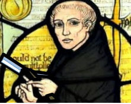

- The Topology of Statistical Verifiability. (2017) [preprint]
Konstantin Genin, Kevin T. Kelly.
Submitted.
- Learning, Theory Choice, and Belief Revision. (2016) [preprint]
Konstantin Genin, Kevin T. Kelly.
Forthcoming in Studia Logica.
- A Topological Explanation of Empirical Simplicity. (2016) [preprint]
Kevin T. Kelly, Konstantin Genin
Presented at the 2016 Philosophy of Science Meeting.
- Realism, Rhetoric, and Reliability. (2016) [preprint] [doi]
Kevin T. Kelly, Konstantin Genin, Hanti Lin.
Synthese 193(4): 1191-1223.
- Theory Choice, Theory Change, and Inductive Truth-Conduciveness. (2015) [preprint]
Konstantin Genin, Kevin T. Kelly.
Proceedings of the Fifteenth Conference on Theoretical Aspects of Rationality and Knowledge (TARK).
- Complexity, Ockham's Razor, and Truth. (2014) [doi]
Kevin T. Kelly, Konstantin Genin.
Modes of Explanation: Affordances for Action and Prediction. Lissack, Michael ed., Palgrave Macmillan.
- Student Profiling from Tutoring System Log Data: When do Multiple Graphical Representations Matter? (2013) [preprint]
Ryan Carlson, Konstantin Genin, Martina Rau, Richard Scheines.
Proceedings of the Education Data Mining (EDM) Conference.
Last update: 04-2017.